Under the moon,
through the seasons.
Seven night paintings paired with their original day scenes. The seasonal keepsakes and outfits below are artwork only: product rules remain pending. All assets are local.
sunlit meadow
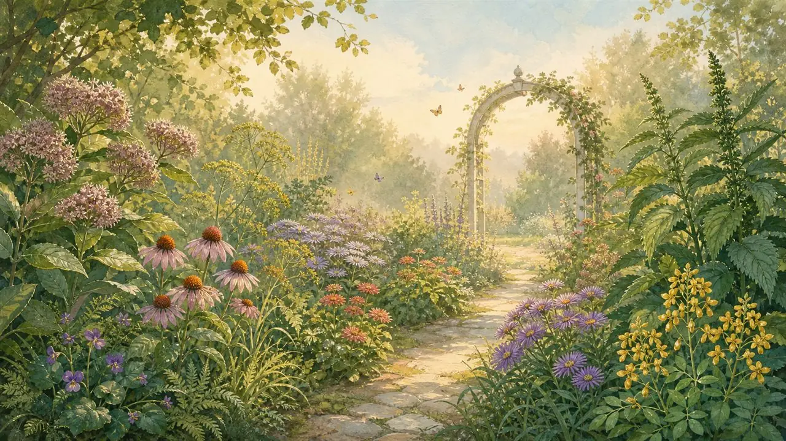
Original day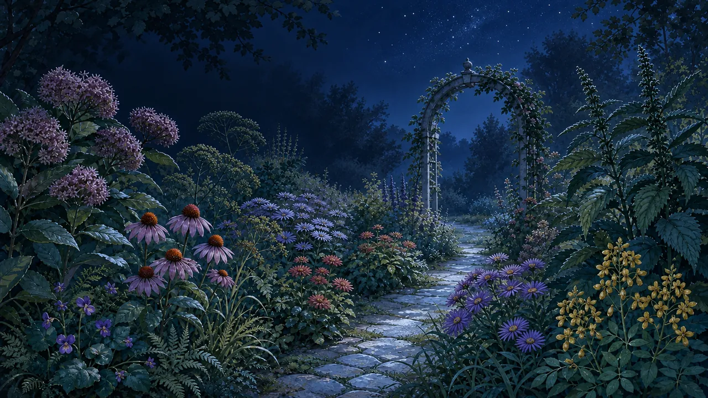
New night paintingwoodland brook
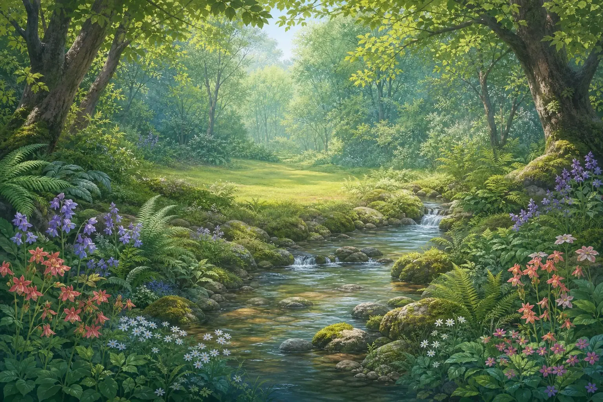
Original day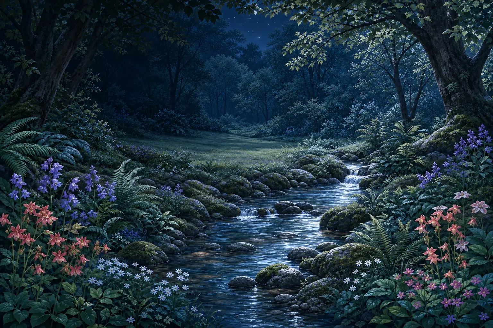
New night paintingsecret conservatory
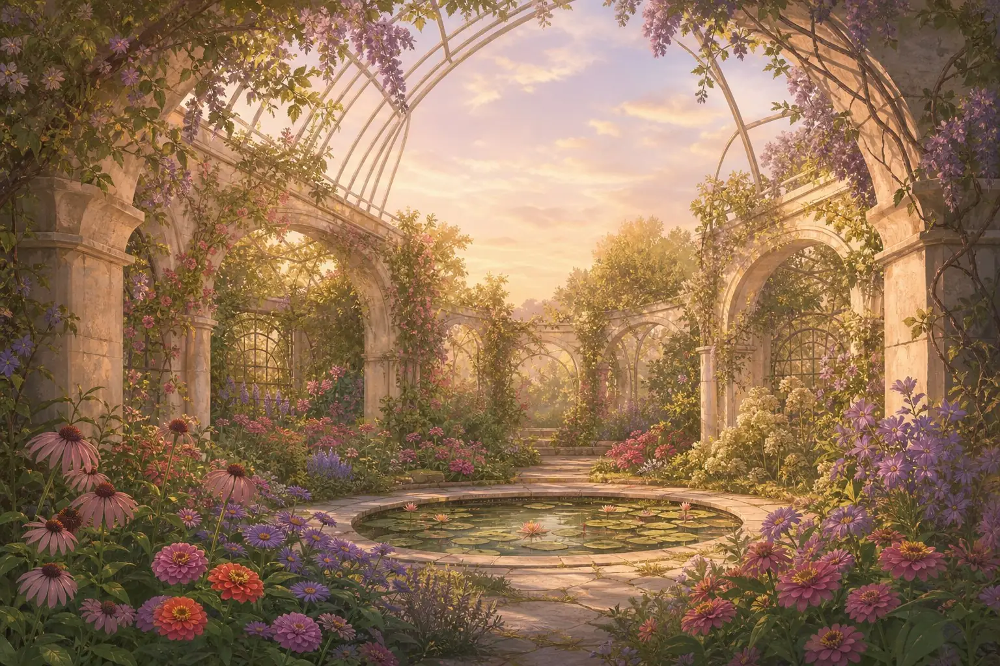
Original day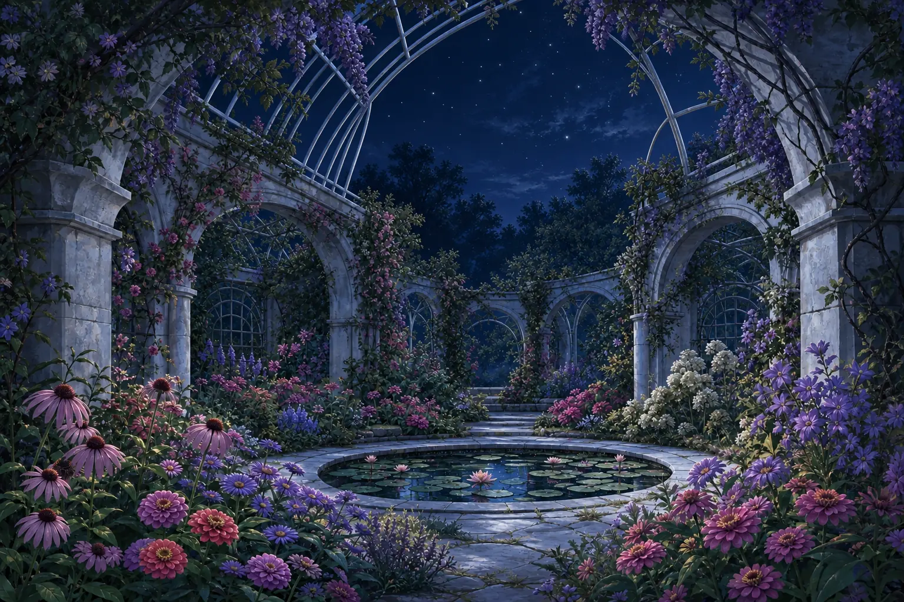
New night paintingcottage bloom
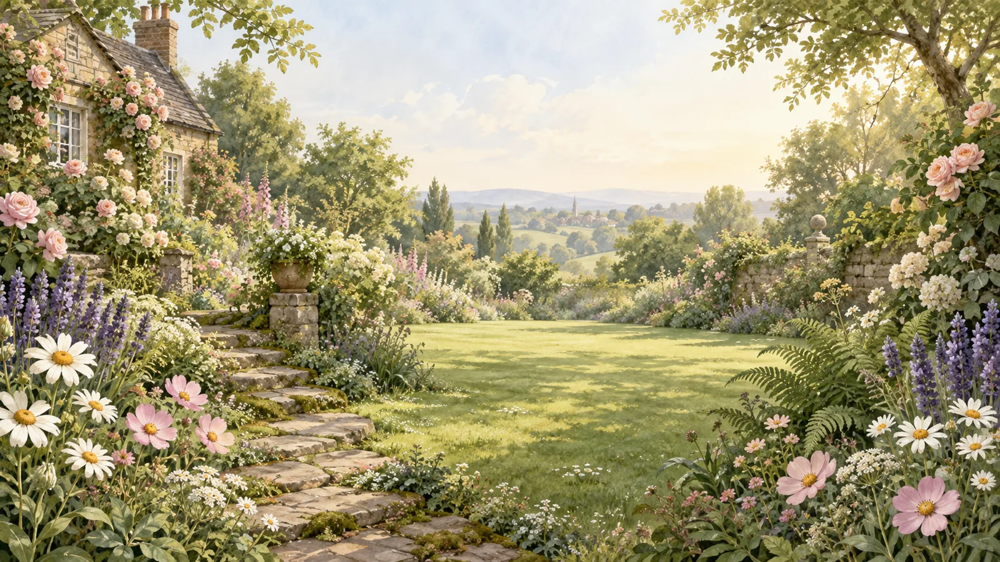
Original dayNew night paintingrain kissed pond
Original dayNew night painting
twilight orchard
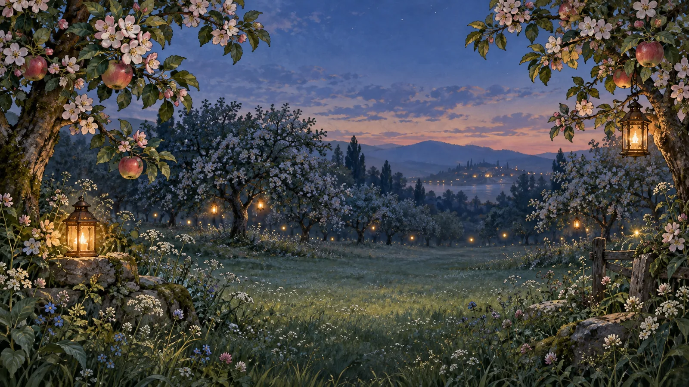
Original day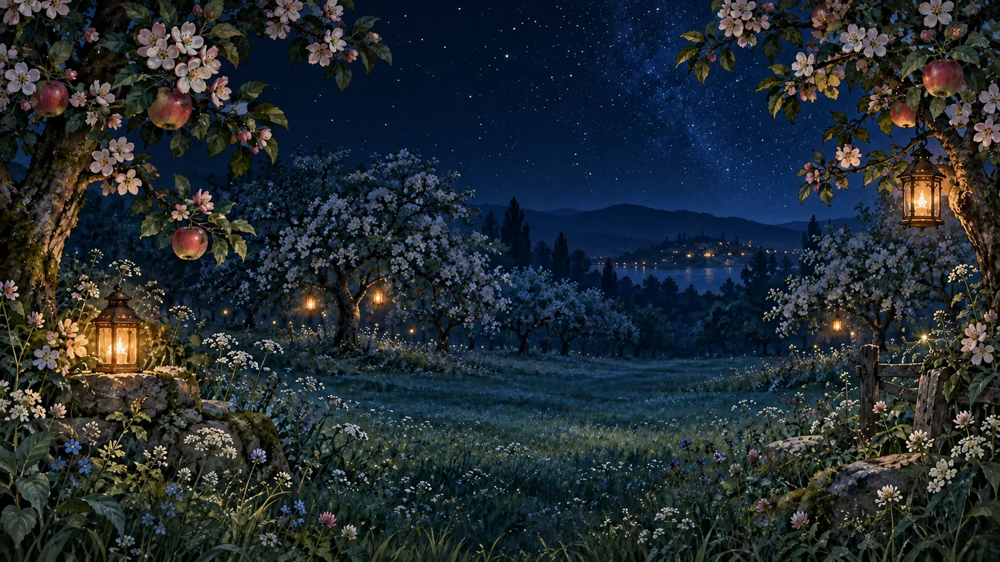
New night paintingcloud garden
Original dayNew night painting
Seasonal keepsakes and outfits
Original SVG shapes, shown against night and cream surfaces. Keepsakes stay separate from gifting and placement; outfits stay separate from the catalogue.
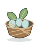
keepsake spring nestkeepsake summer seed head 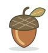
keepsake autumn acorn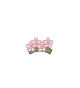
season spring blossom crown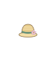
season summer sun hat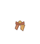
season autumn leaf scarf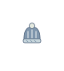
season winter knit capProvenance, prompt set and pending decisions